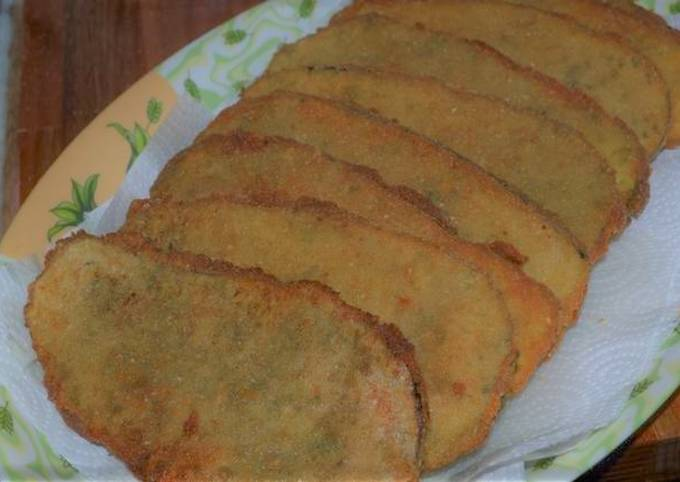

Milanesas de berenjena

Descripcion:
Estas es la receta de las milanesas de berenjena que hago en mi casa, voy a dejar algunos trucos para que salgan riquisimas.
Ingredientes:
- Berenjenas medianas o grandes.
- Pan rallado.
- Harina comun o de garbanzo.
- Provenzal y condimentos para milanesas.
- Mostaza.
- Un poco de agua.
Preparacion:
- Ponemos a precalentar el horno a una temperatura media.
- Cortamos las berenjenas en fetas de 1cm mas o menos y le quitamos obsolutamente toda la piel.
- Las salamos y las apartamos durante unos 20 minutos. Este proceso se llama curado y va a quitarle el amargor a nuestras berenjenas.
- En un recipiente, agregamos harina, condimentos, provenzal, una cucharada de mostaza, sal a gusto y agua hasta formar una mezcla liquida similar a la del huevo.
- Luego pasamos las berenjenas por la mezcla anterior, despues las pasamos por pan rallado y las dejamos en una bandeja para horno con aceite.
- Mandamos todo al horno durante 15 min de cada lado hasta que se doren de ambos lados.